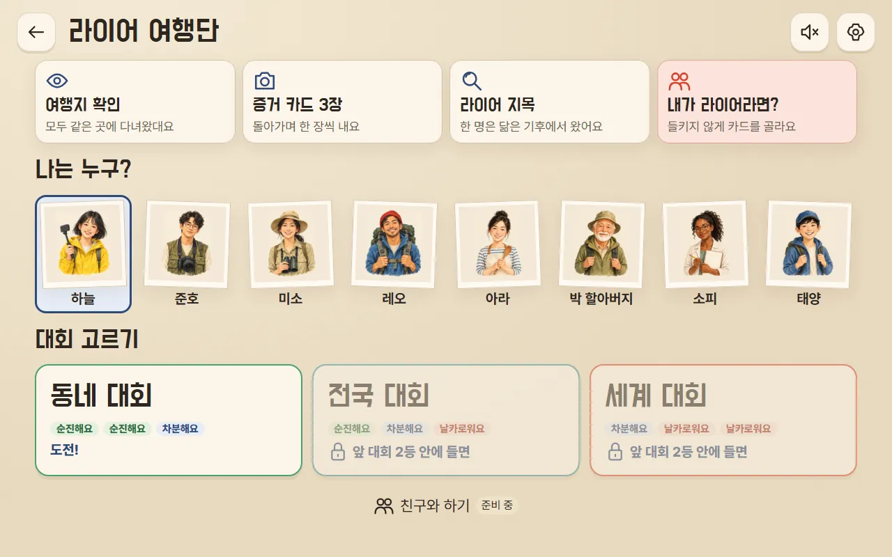
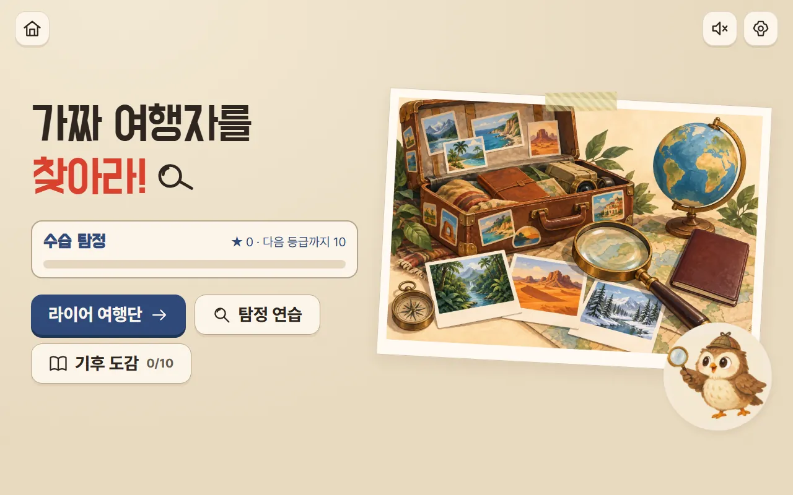
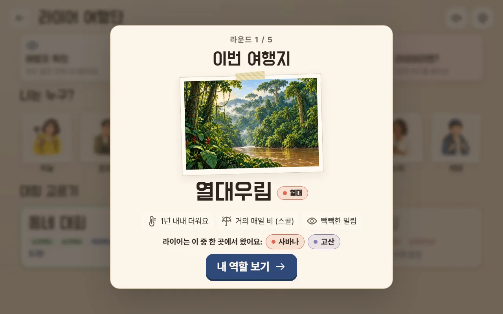
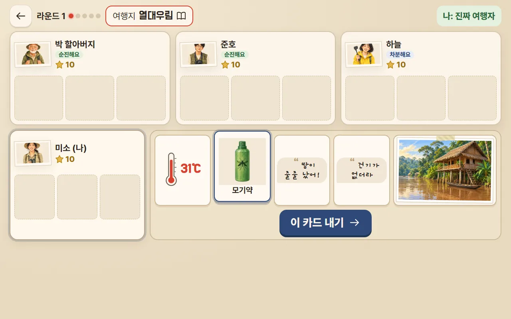
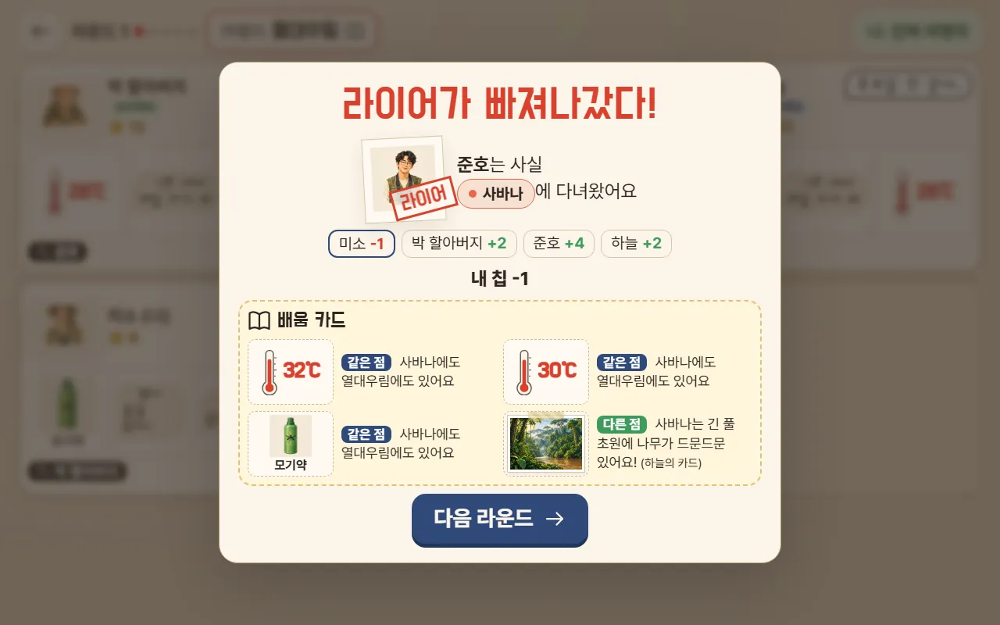
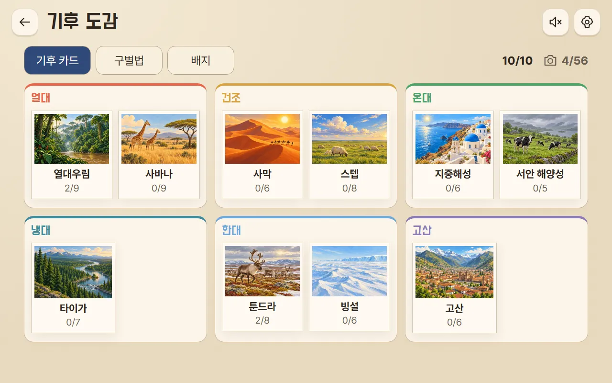

12341
대회 준비
여행자 한 명을 골라 내가 되고, 대회를 골라요. 2등 안에 들면 다음 대회가 열려요.
- 1게임 방법 4장면
- 2나는 누구?
- 3대회 고르기동네 → 전국 → 세계
- 4친구와 하기준비 중
더 지니어스 라이어 게임처럼! 닮은 기후에서 온 라이어를 찾아라

5라운드 동안 라이어를 맞히고, 내가 라이어일 땐 들키지 않아 점수를 가장 많이 모으기!
🃏모두 같은 기후에 다녀왔다고 말해요. 그중 한 명(가끔은 나!)은 닮은 기후에서 온 라이어예요.

1234여행자 한 명을 골라 내가 되고, 대회를 골라요. 2등 안에 들면 다음 대회가 열려요.

123라운드마다 여행지가 바뀌어요. 특징을 기억해요.
진짜 여행자면 증거로 진짜임을 보여 주고, 라이어면 들키지 않게 버텨요.
왼쪽: 진짜 여행자 · 오른쪽: 라이어(사실은 다른 기후)

123456돌아가며 한 장씩, 모두 3바퀴. 내 차례에 카드를 골라 [이 카드 내기].
다른 여행자들이 카드를 보고 의심하거나 믿어요. 성격마다 반응이 달라요.
3바퀴가 끝나면 라이어라고 생각하는 사람을 골라요. 그 전에 자신 있는 만큼 1~3점을 걸어요(라이어는 탈출에 걸어요).

1234라이어가 밝혀지고 점수가 오가요. 배움 카드로 두 기후의 같은 점·다른 점을 확인해요.
★맞히면 +2 · 엉뚱한 사람 −1 · 억울하게 지목 −2 · 라이어가 안 들키면 +4 — 베팅·콤보까지 자세한 계산은 점수 계산에서!
5라운드가 끝나면 점수 순서대로 순위와 칭호가 나와요.
모두 10점으로 시작해요. 라운드가 끝날 때마다 점수가 오르내리고, 5라운드 뒤 점수가 가장 높은 사람이 우승해요.
ℹ점수는 0점 아래로 내려가지 않아요. 점수가 같으면 라이어를 더 많이 맞힌 사람이 앞서요.
| 라이어를 맞혔어요 | +2 |
| 다른 사람을 골랐어요 | −1 |
| 진짜인데 내가 최종 지목됐어요 (억울!) | −2 더 |
| 2번 연속부터 맞힐 때마다 🔥 콤보 | +1 더 |
| 들키지 않았어요 (탈출) | +4 |
| 들켰어요 | 0 |
라이어는 표를 맞히는 점수가 없어요. 대신 탈출에 점수를 걸어요. ③을 보세요.
투표할 때 1~3점 중 하나를 골라요. 1점은 기본이라 더하거나 빼는 게 없고, 2점·3점은 건 점수 − 1만큼 성공하면 더 받고 실패하면 더 잃어요.
| 건 점수 | 맞히면 | 틀리면 |
|---|---|---|
| 1점 | +2 | −1 |
| 2점 | +3 | −2 |
| 3점 | +4 | −3 |
| 건 점수 | 탈출하면 | 들키면 |
|---|---|---|
| 1점 | +4 | 0 |
| 2점 | +5 | −1 |
| 3점 | +6 | −2 |
💡내 의심 게이지가 초록이면 크게 걸어 볼 만하고, 빨강이면 1점이 안전해요.
맞힘 +2 · 3점 베팅 +2 · 2연속 콤보 +1 = +5점
틀림 −1 · 2점 베팅 −1 · 억울한 지목 −2 = −4점
들킴 0 · 3점 베팅 −2 = −2점
탈출 +4 · 3점 베팅 +2 · 소피 능력 +2 = +8점
| 🔍 하늘 | 돋보기를 2번 쓸 수 있어요 (쓸 때마다 −1) |
| 📸 준호 | 돋보기가 공짜예요 (−1 없음) |
| 🔄 미소 | 바꾸기를 2번 할 수 있어요 |
| 🎯 레오 | 4점까지 걸 수 있어요 (맞히면 +5, 틀리면 −4 / 라이어 탈출 +7, 들킴 −3) |
| 🔥 아라 | 콤보가 +1 대신 +2 |
| 🧓 박 할아버지 | 억울하게 지목돼도 −2가 없어요 |
| 🎭 소피 | 라이어로 탈출하면 +2 더 |
| 😊 태양 | 점수는 그대로지만, 처음에 다들 덜 의심해서 게이지가 낮게 시작해요 |
| 1등 | +5 |
| 2등 | +3 |
| 3등 | +1 |
| 4등 | 0 |
예: 18점으로 1등 → 경험치 23. 2등 안에 들면 다음 대회(전국 → 세계)가 열려요.
| 수습 탐정 | 0 |
| 탐정 | 20 |
| 베테랑 탐정 | 60 |
| 명탐정 | 120 |
| 전설의 기후 탐정 | 220 |

이 칸은 수업을 준비하는 선생님을 위한 내용이에요.
6학년 사회 · 세계의 자연환경 — 여러 기후(열대·건조·온대·냉대·한대·고산)의 특징과 비슷한 기후끼리의 같은 점·다른 점